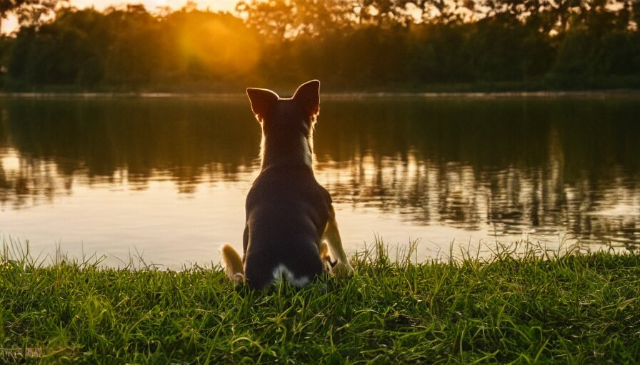

Fundación Refugio Pana
Nace del corazón de su presidenta y fundadora Katiuska Delgado, una mujer que desde su infancia dedicó sus esfuerzos y bienes económicos a la ayuda de animales en situaciones de calle, cuando apenas tenía 4 años rescató a su primer perro, a quien encontró en un callejón lleno de sarna y con fiebre, gracias a la ayuda de su padre llevo al indefenso animal a su hogar donde le dio atención y cuidados.
Somos un refugio Auto financiado que ayuda a los animales maltratados y que se encuentran en estado de abandono, nuestra función dentro de la sociedad es recatar a los animales que están en situación de calle, brindarle asistencia veterinaria y luego de su recuperación encontrarles un lugar responsable.